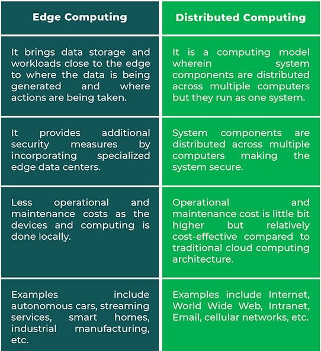

Unit VI Advanced Techniques in Cloud Computing
Future Trends in Cloud Computing
-
Hybrid/ Multi-Cloud Solutions: Hybrid cloud computing refers to using a combination of the private cloud as well as a third-party public cloud service. It is primarily used to allow workloads to move between private and public clouds, giving users more flexibility with their computing needs.
-
Backup And Disaster Recovery: Cyber attacks, data outages, and system failures are a part and parcel of running a business these days. Most businesses have dealt with their servers crashing, leading to loss of critical data files. To ensure such issues don’t damage the organization and its processes, backup and disaster recovery has become a trending use case of the cloud. If Spiceworks reports are to be believed, 15% of the cloud budget is allocated to Backup and Disaster Recovery, which is the highest budget allocation followed by email hosting and productivity tools.
-
Serverless Architecture: A serverless architecture removes all barriers that a standard IT infrastructure would usually bring. Users don’t have to purchase or rent the servers that they run their data on. Instead, a third-party will handle it all for you, allowing your organization to tackle other tasks.
-
AI Platform: As technology advances, one of the most common cloud computing trends to look forward to is AI. Tech giants are now looking into incorporating AI to process big data to improve their business functioning.
-
Cloud Security: Data theft, leakage, and deletion- security is a big challenge even for traditional IT infrastructures. But, with more companies moving to cloud platforms, it’s important to ensure that cloud service providers can create an airtight security system to guarantee the safety of their client’s data.
-
IoT Platform: With a hyper-connected world, one of the most popular cloud computing trends is the rise of IoT platforms. A study by Gartner suggests the number of connected things in use will be going up to 25 billion by 2021 from 14.2 billion as of 2019.
-
Edge Computing: It is a method of optimizing cloud computing network system by performing data processing at the edge of the network, near the source of the data. It works real-time on the cloud servers to process less time-sensitive data or store data for the long term.
-
DevSecOps: Cloud computing services provide users with a seamless and simple experience in managing their data but there are many security risks involved. The security risk of cloud computing includes network eavesdropping, illegal invasion, denial of service attacks, side channel attacks, virtualization vulnerabilities, and abuse of cloud services.
-
Service Mesh: Since cloud platforms are complex, it is critical to ensure that the platform has a fast and safe communication environment. With a service mesh, users have a dedicated layer for service-to-service communication, making their cloud platform highly dynamic and secure.
-
Open Source: This industry is moving towards a path of innovation and collaboration. With this shift in how cloud services are managed, many organizations are looking at adopting an Open Source cloud computing service for their business.
Mobile Cloud
-
Mobile cloud computing uses cloud computing to deliver applications to mobile devices. These mobile apps can be deployed remotely using speed and flexibility and development tools. Mobile cloud applications can be built or revised quickly using cloud services. They can be delivered to many different devices with different operating systems, computing tasks, and data storage. Thus, users can access applications that could not otherwise be supported.
-
Key features:
- Facilitates the quick development, Shared resources of mobile apps.
- Supports a variety of development approaches and devices.
- Improves reliability with information backed up and stored in the cloud.
- Applications use fewer device resources because they are cloud-supported.
- Mobile devices are connected to services delivered on an API architecture.
Automatic Cloud Computing
-
Cloud automation is a broad term that refers to processes and tools that reduce or eliminate manual efforts used to provision and manage cloud computing workloads and services. Organizations can apply cloud automation to private, public and hybrid cloud environments.
-
Benefits:
- Improved security and resilience
- Improved backup processes
- Improved governance
Comet Cloud
-
COMET Cloud is an Internet data storage designed for recording measured values from selected COMET measuring instruments. The data is accessible after the user's connection to the Internet and is displayed in a web browser in the form of a table or graph.
-
Main features of COMETCloud
- display of measured values in the form of a table or graph
- comparison of measured values of several sensors in one time period
- storing GPS coordinates for the device position and displaying all devices on a map
- user-friendly display of measured values in an embedded image of a building or technology diagram
- user name of each device
- insert a note for each device
Multimedia Cloud
-
Cloud Computing opened the opportunity for media operators who serve content providers, IPTV (Internet Protocol Television) operators and multimedia players. When we consider multimedia players, adopting cloud computing is often one of the important priorities in the coming years. Some media players, for example, companies like media post-production, already utilize these kinds of cloud computing–based service capabilities for managing the digital delivery.
-
In the future, multimedia companies will use cloud computing first, who started looking to move their storage requirements into cloud computing. The cost and the investment return for these kinds of services have accelerated.
IPTV
-
Internet Protocol television (IPTV) is the delivery of television content over Internet Protocol (IP) networks. This is in contrast to delivery through traditional terrestrial, satellite, and cable television formats. Unlike downloaded media, IPTV offers the ability to stream the source media continuously. As a result, a client media player can begin playing the content (such as a TV channel) almost immediately. This is known as streaming media.
Energy Aware Cloud Computing
-
Cloud infrastructures are increasingly becoming essential components for providing Internet services. By benefiting from economies of scale, Clouds can efficiently manage and offer a virtually unlimited number of resources and can minimize the costs incurred by organizations when providing Internet services. However, as Cloud providers often rely on large data centres to sustain their business and offer the resources that users need, the energy consumed by Cloud infrastructures has become a key environmental and economical concern.
-
Implementing efficient techniques, frameworks, etc. for better energy efficiency in cloud computing is called "Energy Aware Cloud Computing".
Jungle Computing
-
Jungle computing is a form of high performance computing that distributes computational work across cluster, grid and cloud computing.
-
The increasing complexity of the high performance computing environment has provided a range of choices beside traditional supercomputers and clusters. Scientists can now use grid and cloud infrastructures, in a variety of combinations along with traditional supercomputers - all connected via fast networks. And the emergence of many-core technologies such as GPUs, as well as supercomputers on chip within these environments has added to the complexity. Thus, high-performance computing can now use multiple diverse platforms and systems simultaneously, giving rise to the term "computing jungle".
Distributed Cloud Computing Vs Edge Computing
-
A distributed cloud is an architecture where multiple clouds are used to meet compliance needs, performance requirements, or support edge computing while being centrally managed from the public cloud provider.
-
In essence, a distributed cloud service is a public cloud that runs in multiple locations, including:
- The public cloud provider’s infrastructure
- The public cloud provider’s infrastructure
- In another cloud provider’s data center
- On third party or colocation center hardware
-
Edge vs Distributed Computing:

Containers
-
Containers are lightweight packages of your application code together with dependencies such as specific versions of programming language runtimes and libraries required to run your software services.
-
Containers are packages of software that contain all of the necessary elements to run in any environment. In this way, containers virtualize the operating system and run anywhere, from a private data center to the public cloud or even on a developer’s personal laptop.
-
Containers make it easy to share CPU, memory, storage, and network resources at the operating systems level and offer a logical packaging mechanism in which applications can be abstracted from the environment in which they actually run.
-
Benefits Of Containers:
-
Separation of responsibility: Containerization provides a clear separation of responsibility, as developers focus on application logic and dependencies, while IT operations teams can focus on deployment and management instead of application details such as specific software versions and configurations.
-
Workload portability: Containers can run virtually anywhere, greatly easing development and deployment: on Linux, Windows, and Mac operating systems; on virtual machines or on physical servers; on a developer’s machine or in data centers on-premises; and of course, in the public cloud.
-
Application isolation: Containers virtualize CPU, memory, storage, and network resources at the operating system level, providing developers with a view of the OS logically isolated from other applications.
-
Docker
-
Docker is a set of platform as a service products that use OS-level virtualization to deliver software in packages called containers. The service has both free and premium tiers. The software that hosts the containers is called Docker Engine.
Kubernetes
-
Kubernetes is an open-source container orchestration system for automating software deployment, scaling, and management. Google originally designed Kubernetes, but the Cloud Native Computing Foundation now maintains the project.
Introduction to DevOps
-
DevOps is the combination of cultural philosophies, practices, and tools that increases an organization's ability to deliver applications and services at high velocity: evolving and improving products at a faster pace than organizations using traditional software development and infrastructure management processes.
-
A DevOps engineer introduces processes, tools, and methodologies to balance needs throughout the software development life cycle, from coding and deployment, to maintenance and updates.
IoT and Cloud Convergence
-
The Internet of things describes physical objects with sensors, processing ability, software, and other technologies that connect and exchange data with other devices and systems over the Internet or other communications networks.
-
The field has evolved due to the convergence of multiple technologies, including ubiquitous computing, commodity sensors, increasingly powerful embedded systems, and machine learning.
The Cloud and IoT in your Home
-
Home cloud computing is the process of using a remote server to store, manage and access data and applications from home. It allows users to access their files, applications, and other digital content from any device with an internet connection, whether it be a computer, phone, or tablet. Private cloud computing can also be used to back up data and protect the information in case of emergencies.
-
A lot of individuals and small businesses use home/private cloud computing to browse, search through files and even work on projects from any device. It’s a great alternative to setting up a server in your house because it eliminates the need for physical storage devices that contain data.
-
IoT home automation is the ability to control domestic appliances by electronically controlled, internet-connected systems. It may include setting complex heating and lighting systems in advance and setting alarms and home security controls, all connected by a central hub and remote-controlled by a mobile app.
The IoT and cloud in your Automobile
IoT in Automobile
-
“Automotive IoT” refers to the integration of such components as sensors, gadgets, clouds, and apps into vehicles and their use as a complex system for predictive maintenance, connection of cars, fleet management, etc.
-
Implementation of the Internet of Things for cars’ manufacturing brought the following benefits for the producers:
- better data collection and analysis with the following improvement and speed up of the whole manufacturing process;
- avoidance of certain risks and financial losses;
- higher industrial safety standards;
- equipment theft monitoring, etc.
Cloud in Automobile
-
The way we interact with our car changed entirely in a few decades. Nowadays, cloud technology in cars is present in several ways. For example, most electric cars can exchange information with remote data centers to inform the driver about the road and weather conditions.
-
The cloud technology in cars has a lot of possibilities. It is uniquely suited to set up, scale, manage and update features and services efficiently with a connected unit.
-
Automobile companies develop and adapt their connectivity software continuously to allow their customers a better interaction between the cloud, the car, and smartphones using infotainment as the primary interface.
PERSONAL
-
A personal cloud is a collection of digital content and services which are accessible from any device. The personal cloud is not a tangible entity. It is a place which gives users the ability to store, synchronize, stream and share content on a relative core, moving from one platform, screen and location to another.
IoT in Healthcare
-
IoT explores new dimensions of patient care through real-time health monitoring and access to patients' health data. This data is a goldmine for healthcare stakeholders to improve patient's health and experiences while making revenue opportunities and improving healthcare operations.